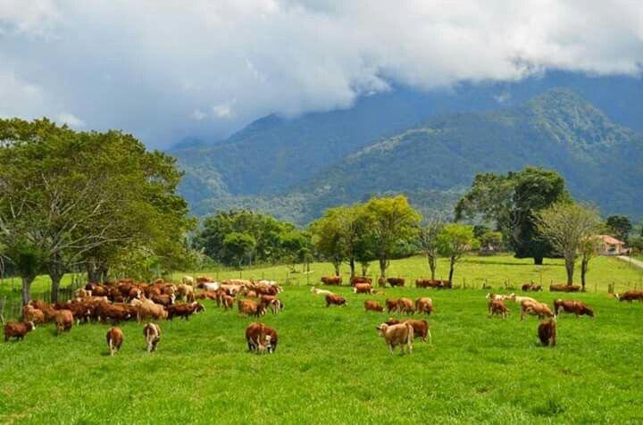

Mengenal lebih dekat Desa Suntenjaya Kecamatan Lembang Kabupaten Bandung Barat.

Desa yang memiliki potensi pertanian, perikanan dan peternakan sebagai penggerak ekonomi masyarakat.
Kecamatan Lembang Kabupaten Bandung Barat Provinsi Jawa Barat
Laki-laki : 2.650 Jiwa
Perempuan : 2.550 Jiwa
Meliputi kawasan permukiman, perkebunan dan lahan pertanian.
Desa Suntenjaya merupakan salah satu desa di Kecamatan Lembang Kabupaten Bandung Barat. Sejak dahulu masyarakat menggantungkan kehidupan pada sektor pertanian hortikultura, peternakan sapi perah dan budidaya ikan air tawar. Perkembangan desa terus meningkat seiring bertambahnya sarana pendidikan, jalan desa, irigasi serta kelompok tani yang aktif dalam meningkatkan kesejahteraan masyarakat.
"Mewujudkan Desa Suntenjaya yang maju, mandiri, sejahtera, berbasis pertanian, peternakan, perikanan, serta pelayanan publik yang berkualitas."
| Jabatan | Nama |
|---|---|
| Kepala Desa | ....................................... |
| Sekretaris Desa | ....................................... |
| Kaur Pemerintahan | ....................................... |
| Kaur Keuangan | ....................................... |
| Kaur Umum | ....................................... |
| Sektor | Potensi |
|---|---|
| Pertanian | Sayuran Hortikultura |
| Peternakan | Sapi Perah, Kambing, Domba |
| Perikanan | Ikan Nila, Gurame, Lele |
| Pariwisata | Agrowisata dan Wisata Alam |
Desa Suntenjaya berada di Kecamatan Lembang, Kabupaten Bandung Barat, Provinsi Jawa Barat.